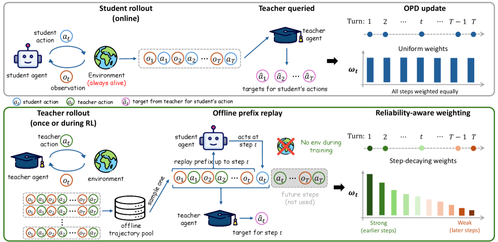
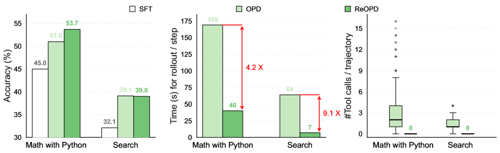

Multi-Turn OPD via Teacher Replay (Microsoft)
Paper: "Multi-Turn On-Policy Distillation with Prefix Replay" (arXiv 2607.04763), by Baohao Liao, Hanze Dong, Christof Monz, Xinxing Xu, Li Dong, and Furu Wei; v1 July 6, 2026. The thread attributes the work to Microsoft Research and the University of Amsterdam. Grounded in the fetched abstract plus the dair_ai thread.
TL;DR
- ReOPD (Replayed-Prefix On-Policy Distillation) makes on-policy distillation affordable for multi-turn agents: instead of fresh student rollouts through a live environment at every update, it replays pre-collected teacher trajectories as prefixes, lets the student act at selected steps, and has the teacher supply dense per-step supervision — with zero environment/tool execution during student training.
- It names a genuine pathology of multi-turn OPD, the prefix trap: pushing training histories toward the student's own distribution makes supervision more relevant to the student but simultaneously drags the teacher onto states where its targets are unreliable — a two-sided distribution shift between student occupancy and teacher reliability.
- The fix is reliability-aware prefix distribution design, implemented as a simple step-decaying sampling schedule favoring early, lower-shift prefixes. Across math-with-Python and search environments and multiple teacher/student scales, it preserves or improves accuracy while running at least 4x faster per rollout than standard OPD.
Why this matters
Your OPD cluster so far lives almost entirely in single-turn land: the survey's framework, OPD²'s delta loss, and most of the no-free-lunch failure modes all assume the student emits one response and the teacher scores its tokens. The survey explicitly lists agent-level learning as an open problem. This paper is the concrete attack on that problem.
The obstacle is cost structure. In single-turn OPD the expensive part is teacher forward passes, which batch nicely. In multi-turn agentic OPD every update needs (a) fresh student rollouts through an environment — real tool calls, real search queries, real code execution, with their latency, flakiness, and per-call cost — plus (b) teacher queries at every visited interaction history. Environment interaction serializes training, doesn't batch, and often costs actual money. This is the same infrastructure pain that motivates the sandbox-scaling work elsewhere in your tracker (OSGym); ReOPD instead asks whether you can delete the environment from the training loop entirely.
There's also a scientific contribution independent of the systems win: the prefix trap is a clean articulation of why naive multi-turn OPD is unstable, and it directly echoes the prefix pathologies in your no-free-lunch item (TRD's result that token-level KL along a student rollout gives anchored-to-bad-context supervision after an early wrong turn). ReOPD generalizes that concern to interaction histories and adds the flip side: it's not just that student-visited states can be bad for the student — they can also be states where the teacher's targets stop being trustworthy.
The core idea
On-policy distillation wants supervision at states the student actually visits (that's the whole exposure-bias argument). But in multi-turn settings, whose states you train on is a design choice with a two-sided trade-off:
- Sample histories from the student's occupancy distribution: supervision is maximally relevant, but the teacher is now queried at states it may never have encountered — degenerate tool outputs, malformed intermediate reasoning, off-manifold interaction histories — where its per-step targets are unreliable. Distilling unreliable targets faithfully is worse than useless.
- Sample histories from the teacher's trajectories: teacher targets are reliable (the teacher generated these states), but you've reintroduced off-policy exposure bias — the student trains on states it won't visit at inference.
The paper's insight is to treat this as a prefix distribution design problem: choose, per training example, how much of a pre-collected teacher trajectory to replay as a frozen prefix before handing control to the student. Short replayed prefixes → more student-shifted, less teacher-reliable. Long replayed prefixes → the reverse. Early steps of a trajectory have accumulated the least distribution shift, so supervision there is both relevant and reliable; late steps are where the trap bites. Hence the step-decaying schedule: sample student-action points with probability that decays over trajectory depth (mechanism as described in the thread; exact schedule form — verify in the paper).
The economic consequence is the headline: because the prefixes come from pre-collected teacher trajectories, the environment never has to be executed during student training. Tool outputs, search results, and code execution results inside the prefix are replayed verbatim from the teacher's log.

Figure from the paper: Comparison between OPD and ReOPD for agentic tasks. Up: OPD with online environment — the environment is always alive during training, and all steps contribute equally to the loss. Down: ReOPD with offline environment.
How it works
Training loop as the abstract and thread support it:
- Offline: collect teacher trajectories once — full multi-turn rollouts including tool calls and environment observations (math reasoning with a Python interpreter; search environments).
- Per training step: sample a teacher trajectory and a cut point via the step-decaying schedule (early cut points favored). Replay the teacher trajectory up to the cut as the student's context — including the environment observations recorded in the log.
- The student acts at the selected step(s) beyond the cut, generating its own continuation from the replayed state.
- The teacher supplies dense per-step supervision on the student's actions at those histories — token-level targets in the standard OPD fashion — "without executing anything new": no tool calls, no environment interaction during student training.
- Update the student on this dense signal; repeat.
What this buys: rollout generation is now pure LLM inference (replay + student sampling + teacher scoring), which batches and parallelizes like ordinary distillation — hence the ≥4x per-rollout speedup. What it costs: student-generated actions beyond the cut never get executed, so the student never sees the environment's response to its own actions during training; supervision quality rests entirely on the teacher's per-step targets at the replayed states (implication mine — verify how the paper handles post-action turns).
The paper's v3 HTML formalizes all of this. The multi-turn OPD objective is distillation over a designed prefix distribution \(\rho_t\) (Eq. 3):
where \(H_t\) is the interaction history (prefix) at step \(t\), \(\rho_t\) is the trainer-chosen distribution over those histories, \(\ell\) is the per-step distillation loss (token-level KL to the teacher \(\pi_T\)), and \(\alpha_t\) are step weights.
The prefix trap is the two-sided bound on the gap to the ideal objective \(\mathcal{R}^{\star}\), which supervises at the student's own occupancy \(d^t_{\theta_{\mathrm{old}}}\) (Eq. 4):
the first term is occupancy mismatch (train on prefixes the student won't visit and you pay it), the second is teacher-target unreliability \(\epsilon_{T,t}\) at the prefixes you did train on — push \(\rho_t\) toward the student and the first term shrinks while the second grows. That is the trap, as an inequality.
The reliability-aware solution interpolates the two occupancies geometrically (Eq. 6), and in practice collapses to the step-decaying cut-point schedule:
where \(\gamma_t\in[0,1]\) trades student-relevance against teacher-reliability, \(d_T^t\) is the teacher's occupancy, and the bridge weight is approximated (Eq. 8) by sampling teacher-trajectory cut points \(t\) with probability \(\propto\kappa^t\), \(\kappa\in(0,1]\) — early steps favored.
Algorithm 1: Replayed-Prefix On-Policy Distillation (ReOPD)
# condensed from the paper's algorithm box
Input: teacher trajectory pool D_T, teacher pi_T, student pi_theta,
step-decay schedule w(t;kappa) = kappa^t
theta_old <- theta
for each OPD iteration:
assemble candidate positions {(x, h_t)} from pooled trajectories
# prefix h_t = teacher actions A_<t + recorded observations O_<=t
draw positions with p_t proportional to w(t;kappa)
# early, low-shift steps sampled more often
for each sampled position (x, h_t):
student generates action A_t = (a_t^1..a_t^n) ~ pi_theta_old(.|x, h_t)
# on-policy tokens; NO environment call
loss += sum_j KL( pi_theta(.|x,h_t,a_t^<j) || pi_T(.|x,h_t,a_t^<j) )
# dense per-token teacher supervision along the student's action
update theta on accumulated loss; theta_old <- theta
return pi_theta
The "reliability-aware" framing matters for how to think about the schedule: it is explicitly not trying to match the student's occupancy distribution (pure on-policyness); it is optimizing a trade-off between occupancy match and teacher-target reliability, and conceding some on-policyness at deep steps because the supervision there would be poison anyway.
Results
Numbers present in the sources (abstract + thread):
- Setting: mathematical reasoning with Python tool use, and search environments; multiple teacher and student scales (specific model families/sizes not in my sources — verify in the paper).
- Accuracy: ReOPD "preserves or improves accuracy" relative to standard multi-turn OPD.
- Efficiency: zero tool calls during student training and at least 4x faster per rollout than OPD.
No absolute benchmark scores, model names, or dataset names surfaced in the abstract or thread; treat the above as the verified claim set.

Figure from the paper: ReOPD keeps the benefits of on-policy distillation while removing environment interaction — it matches or improves OPD accuracy, trains much faster per step, and eliminates tool calls during training.
How it connects
- DAgger and hindsight imitation: ReOPD is recognizably a descendant of the imitation-learning tradition of mixing expert and learner state distributions — but inverted. DAgger pushes toward learner states and assumes the expert can label anything; ReOPD's prefix trap is precisely the observation that for LLM teachers, that assumption fails, so the mixture must respect teacher reliability.
- GKD / MiniLLM: GKD's mixed student/teacher sampling and MiniLLM's teacher-mixed rollouts are single-turn ancestors of prefix-distribution design; ReOPD lifts the idea from token-level mixing within one response to turn/step-level mixing across an agentic trajectory, and adds the replay-economics angle.
- Off-policy RL replay buffers: reusing logged trajectories to avoid environment cost is the oldest trick in RL; the novelty here is doing it inside a distillation objective where the teacher provides dense per-step targets, rather than relying on sparse logged rewards.
- Within your tracker: TRD (in the no-free-lunch item) fixes the single-turn prefix pathology by having the teacher refine the student's trajectory; ReOPD fixes the multi-turn version by choosing which prefixes to train on. The survey's agent-level-learning open problem is exactly this paper's slot. And the speed argument makes ReOPD the natural pairing for any of the loss-side innovations (e.g., OPD²'s delta signal) if you wanted cheap multi-turn reasoning distillation — an unexplored combination as far as my sources show.
Critical take
- It is on-policy in a qualified sense. The student acts at selected steps, but the histories are teacher-generated and the student's actions are never executed. Late-trajectory, student-induced states — the exact states the exposure-bias argument worries about — are deliberately down-weighted. The bet is that teacher-target unreliability there outweighs the occupancy mismatch; that bet presumably holds in their environments, but it's a trade, not a free win, and the "preserves or improves accuracy" phrasing suggests parity more often than dominance.
- Replay assumes replayability. Deterministic-enough environments (Python execution, cached search) replay cleanly. Stochastic, stateful, or time-varying environments (live web, real APIs, long-horizon OS interaction) break the frozen-prefix assumption; the two evaluated environments are on the friendly end of that spectrum.
- "Zero tool calls" excludes teacher collection. The pre-collected teacher trajectories carry the full environment cost up front. Amortized over many student runs and epochs this is a great deal, but for a one-off distillation the accounting is less lopsided than the headline suggests.
- Open questions: does the step-decaying schedule need tuning per environment? How does the method behave when teacher trajectories are scarce or narrow (coverage of the state space)? And does never seeing consequences of its own tool calls leave the student with execution-feedback blind spots that only show up on harder, longer-horizon tasks?
If you remember three things
- ReOPD = multi-turn on-policy distillation with replayed teacher-trajectory prefixes: student acts at sampled steps, teacher scores densely, environment is never executed during training — ≥4x faster per rollout, zero tool calls.
- The prefix trap: student-shifted histories are more relevant but push the teacher onto unreliable states; multi-turn OPD is a two-sided distribution-shift problem, and prefix selection is the control knob.
- The practical recipe is a step-decaying prefix schedule — supervise early, low-shift steps preferentially — which preserved or improved accuracy across math+Python and search environments at multiple scales.